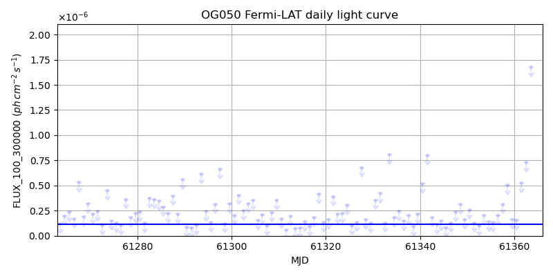
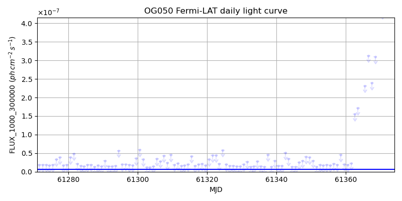

LAT Lightcurve site: https://fermi.gsfc.nasa.gov/ssc/data/access/lat/msl_lc/source/OG_050
NED: Query
Time of last update of this page: UT: 2026-11-20 16:16 (MJD: 61364.678)
| Property | Value |
|---|---|
| R.A. | 5:32:38.88 |
| Dec. | 7:32:42.0 |
| z | 1.254 |
| 3FGL SpectrumType | LogParabola |
| 3FGL PL Index | |
| 3FGL Flux_100_300000 | 1.14e-07 1 / (s cm2) |
| 3FGL Flux_1000_300000 | 6.65e-09 1 / (s cm2) |
| 3FGL Flux >200 GeV | 2.09e-12 1 / (s cm2) |
| 3FGL Extrap. Crab >200 GeV | 0.01 |
| 3FGL Flux After EBL Absorption >200GeV | 1.26e-14 1 / (s cm2) |
| 3FGL EBL Crab Fraction >200GeV | 0.00 |

| MJD | dMJD | Flux | dFlux | Frac3FGL | FracCrab>200GeV | EBLFracCrab>200GeV |
|---|---|---|---|---|---|---|
| 61359.50 | 0.50 | 1.61e-07 | 0.00e+00 | 0.00 | 0.00 | 0.00 |
| 61360.50 | 0.50 | 1.55e-07 | 0.00e+00 | 0.00 | 0.00 | 0.00 |
| 61361.50 | 0.50 | 5.25e-07 | 0.00e+00 | 0.00 | 0.00 | 0.00 |
| 61362.50 | 0.50 | 7.30e-07 | 0.00e+00 | 0.00 | 0.00 | 0.00 |
| 61363.50 | 0.50 | 1.68e-06 | 0.00e+00 | 0.00 | 0.00 | 0.00 |
| MJD | dMJD | Flux | dFlux | Frac3FGL | FracCrab>200GeV | EBLFracCrab>200GeV |
|---|---|---|---|---|---|---|
| 61328.50 | 3.50 | 1.03e-07 | 0.00e+00 | 0.00 | 0.00 | 0.00 |
| 61335.50 | 3.50 | 5.38e-08 | 0.00e+00 | 0.00 | 0.00 | 0.00 |
| 61342.50 | 3.50 | 7.27e-08 | 0.00e+00 | 0.00 | 0.00 | 0.00 |
| 61349.50 | 3.50 | 7.51e-08 | 0.00e+00 | 0.00 | 0.00 | 0.00 |
| 61356.50 | 3.50 | 5.01e-08 | 0.00e+00 | 0.00 | 0.00 | 0.00 |

| MJD | dMJD | Flux | dFlux | Frac3FGL | FracCrab>200GeV | EBLFracCrab>200GeV |
|---|---|---|---|---|---|---|
| 61359.50 | 0.50 | 2.04e-08 | 0.00e+00 | 0.00 | 0.00 | 0.00 |
| 61360.50 | 0.50 | 1.88e-08 | 0.00e+00 | 0.00 | 0.00 | 0.00 |
| 61361.50 | 0.50 | 2.32e-08 | 0.00e+00 | 0.00 | 0.00 | 0.00 |
| 61362.50 | 0.50 | 1.55e-07 | 0.00e+00 | 0.00 | 0.00 | 0.00 |
| 61363.50 | 0.50 | 1.72e-07 | 0.00e+00 | 0.00 | 0.00 | 0.00 |

| MJD | dMJD | Flux | dFlux | Frac3FGL | FracCrab>200GeV | EBLFracCrab>200GeV |
|---|---|---|---|---|---|---|
| 61328.50 | 3.50 | 3.73e-09 | 0.00e+00 | 0.00 | 0.00 | 0.00 |
| 61335.50 | 3.50 | 4.68e-09 | 0.00e+00 | 0.00 | 0.00 | 0.00 |
| 61342.50 | 3.50 | 4.35e-09 | 0.00e+00 | 0.00 | 0.00 | 0.00 |
| 61349.50 | 3.50 | 1.31e-08 | 0.00e+00 | 0.00 | 0.00 | 0.00 |
| 61356.50 | 3.50 | 3.05e-09 | 0.00e+00 | 0.00 | 0.00 | 0.00 |
--------------------------------------------------------- Using user-supplied coords: 5:32:38.88 7:32:42.0 2000 --------------------------------------------------------- FLWO UT night of: 2026-11-21 Local Sid. @ Midnight: 03:37 Sunset (-15.0) (local, UT): 18:33 01:33 Sunrise (-15.0) (local, UT): 05:47 12:47 Moonrise (local, UT): Moonset (local, UT): 03:40 10:40 Moon phase: 0.85 --------------------------------------------------------- AzTime LSID UT Obj_el Obj_az Mn_el Mn_az Sep. --------------------------------------------------------- 18:33 22:09 01:33 -13.7 72.0 47.9 117.4 73.6 19:03 22:39 02:03 -7.5 76.2 53.3 125.0 73.4 19:33 23:09 02:33 -0.6 80.3 58.2 134.7 73.3 20:03 23:39 03:03 5.2 84.2 62.3 146.9 73.1 20:33 00:09 03:33 11.5 88.1 65.1 162.1 72.9 21:03 00:39 04:03 17.9 92.1 66.3 179.7 72.8 21:33 01:09 04:33 24.3 96.2 65.4 197.5 72.6 22:03 01:39 05:03 30.6 100.6 62.9 213.2 72.4 22:33 02:09 05:33 36.8 105.6 59.0 225.9 72.3 23:03 02:39 06:03 42.9 111.2 54.2 235.9 72.1 23:33 03:09 06:33 48.7 117.9 48.9 243.9 71.9 00:03 03:39 07:03 54.1 126.1 43.2 250.4 71.7 00:33 04:10 07:33 58.9 136.4 37.3 255.9 71.6 01:03 04:40 08:03 62.8 149.6 31.2 260.7 71.3 01:33 05:10 08:33 65.3 165.7 25.1 265.1 71.1 02:03 05:40 09:03 65.9 183.7 19.0 269.2 70.9 02:33 06:10 09:33 64.5 201.2 12.9 273.0 70.7 03:03 06:40 10:03 61.4 216.2 6.8 276.9 70.4 03:33 07:10 10:33 57.1 228.1 1.0 280.7 70.1 04:03 07:40 11:03 52.0 237.5 -4.9 284.7 69.9 04:33 08:10 11:33 46.4 245.0 -11.1 288.8 69.6 05:03 08:40 12:03 40.4 251.2 -16.8 293.2 69.2 05:33 09:10 12:33 34.3 256.5 -22.3 298.1 68.9 05:47 09:25 12:47 31.3 258.8 -24.8 300.5 68.8 --------------------------------------------------------- Dark hours >55 deg.: 0.08 srcstart (UT): 2026-11-21 10:40 srcend (UT): 2026-11-21 10:45